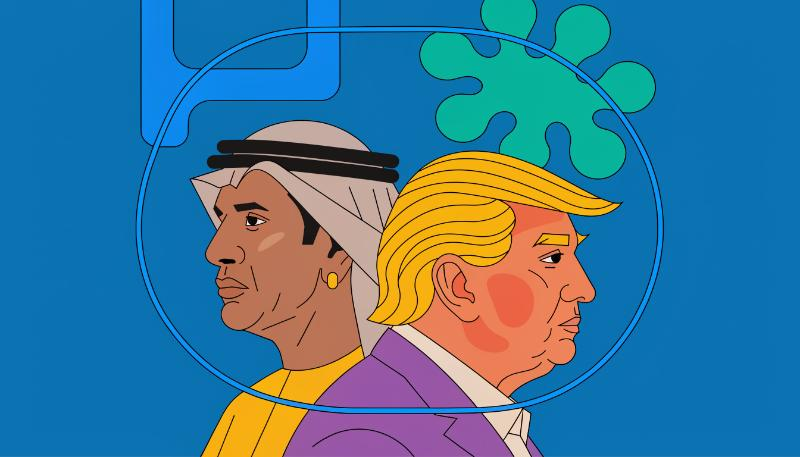

A 49% Stake, One Signature Away From a Federal Charter. Sheikh Tahnoon bin Zayed al Nahyan is the UAE's national security advisor, brother to its president, and the man intelligence circles call the "spy sheikh." His investment vehicle, StringZ Holding RSC, owns 49% of WLTC Holdings, the parent company behind World Liberty Financial's planned bank (CNBC). A Trump family entity holds 38%. This is not Tahnoon's first check written to the Trump family: in January 2025, the month Trump returned to office, Tahnoon and co-investors put $500 million into World Liberty and walked away with a 49% stake in the crypto company itself, a deal that sent $263 million directly to Trump family entities, according to Trump's own 2025 financial disclosure (CNBC).
That earlier deal was an investment. This one is a bank charter, and charters come with federal oversight. The Office of the Comptroller of the Currency granted World Liberty preliminary conditional approval this month to operate as a federally chartered national trust bank, letting it issue and redeem its own stablecoin, USD1, currently worth about $4 billion, instead of routing it through the third-party custodian BitGo (The Week). NYU Stern professor Austin Campbell called the setup "pretty unprecedented" — the OCC is now the regulator responsible for policing a bank tied to the sitting president's family, a fox-and-henhouse arrangement CNN flagged as a new channel for foreign actors to curry favor with the White House (The Week).
Congress cannot allow it to stand.
Sen. Elizabeth WarrenThe timing sharpens the stakes. While the OCC was clearing World Liberty's charter, the Trump administration was separately negotiating UAE access to advanced American AI chips, approving sales to G42, a state-backed AI company Tahnoon controls, and easing purchase limits last month (CNBC). World Liberty spokesman David Wachsman called the firm "a private American financial technology company, not a political organization" and said "no one at World Liberty works for the U.S. government and there are no conflicts of interest." He did not address the ownership structure itself. Warren has already introduced the Ending Presidential Corruption in Banking Act, aimed at barring officials and their families from owning banks; Democrats say they'll subpoena the OCC's approval records if they retake Congress (The Week). For now, the man overseeing chip exports to Tahnoon's company and the man whose family profits from Tahnoon's bank stake are the same person.
Two federal agencies now sit on either side of the same family's balance sheet, and the calendar is about to force the question of which one blinks.
The OCC's Conditions List Becomes the Next Pressure Point. World Liberty's charter is conditional, not final, which means the OCC still has to decide what "additional conditions" means in practice before the bank can open its doors. The most likely outcome in the next two weeks is that the agency moves to finalize those conditions quietly, without a public hearing, the same way it granted preliminary approval in the first place. Watch whether the OCC requires any disclosure of Tahnoon's role as a sitting foreign national security official, because a refusal to add that condition will read less like an oversight and more like a decision.
Warren's Bill Goes Nowhere in Committee, and That's the Point. The Ending Presidential Corruption in Banking Act will almost certainly stall without a hearing date, because Senate Banking Committee Republicans have no incentive to advance a bill built around a live political liability for the president. That failure isn't the end of the story. Democrats have already signaled the real fight is a subpoena for OCC approval records if they win back Congress, which turns this from a legislative fight into a records fight, one where the documents matter more than the vote count. Elizabeth Warren has run this play before, most notably with Wells Fargo, and her pattern is to lose the floor vote and win the paper trail two years later.
The Chip Decision and the Bank Charter Will Get Harder to Separate. The Commerce Department is expected to face fresh requests from G42 for expanded chip access in the coming weeks, the same window in which the OCC finalizes World Liberty's remaining conditions. Because Tahnoon sits on both sides of the ledger, as chip buyer and bank shareholder, any approval on chips will now draw an automatic comparison to the bank charter, whether or not the two decisions are formally connected. The most likely near-term outcome is that the administration tries to keep the two processes visibly separate on paper, issuing chip and banking decisions through different agencies on different weeks to blunt the appearance of a single transaction.
The people positioned to lose here are the OCC's own examiners, who inherit a mandate to police a bank connected to the man who appoints their agency's leadership. The people positioned to win, for now, are Tahnoon and the Trump family entities holding the other 38%, both of whom benefit every week this stays a paperwork story instead of a hearing.
The room the OCC just built has doors in it that weren't there before the charter existed at all.
A Second Gulf State Buys Its Way Into the Same Structure. World Liberty's ownership table now has a template: a foreign sovereign-linked investor takes a stake just under half, avoids the disclosure threshold that would trigger deeper scrutiny, and gets a seat at the table of a federally chartered bank tied to a sitting president. That structure didn't exist a month ago. Now that it does, Saudi or Qatari sovereign wealth vehicles, both of which have already run parallel courtships of Trump-linked ventures, have a proven playbook sitting in public filings to copy. The OCC's silence on requiring disclosure of Tahnoon's government role is the permission slip. If the agency finalizes World Liberty's conditions without addressing foreign-official ownership, it hasn't just cleared one bank. It's published the terms under which any government with money and patience can buy a comparable stake in the next Trump-linked charter application, and Commerce has already shown, through the G42 chip approvals, that it's willing to keep the paperwork on separate tracks so the two decisions never have to be reconciled out loud.
That Template Turns the OCC's Conditions List Into a Congressional Subpoena Target Before Democrats Even Retake the Majority. If a second sovereign investor steps into a Trump-linked charter while Warren's bill sits stalled in committee, the story stops being about one bank and becomes about a pattern the OCC enabled twice with the same silence. That's a door that only opens because the first one did. A single foreign stake looks like an ethics question a spokesman can wave off with a line about private companies and separate governance. A second one, structured the same way, looks like a regulatory loophole the agency knew about and left open on purpose. Oversight Democrats don't need subpoena power to make that case publicly. They need one more filing that mirrors StringZ Holding's math, and Politico's own reporting on the coming OCC probe suggests they're already watching the approval queue for exactly that.
The Generative Door: Texas Republicans Have Already Shown the Break Is Survivable. Greg Abbott paused data center connections over Trump's public objection and Trump responded by telling Republican candidates they don't need to match him. That exchange, on a different issue, just proved something useful for the banking fight: distancing from a Trump-linked business decision no longer costs a Republican the president's public backing. A Senate Banking Committee Republican looking at World Liberty's charter now has a demonstrated model, from Abbott and Paxton's own week, for opposing a Trump business priority without drawing a primary threat. That doesn't make a hearing on Warren's bill likely. It makes it newly survivable for the first Republican willing to ask the OCC, on the record, why a foreign national security official's ownership stake didn't require disclosure.
The spin isn't that this deal is legal. It's that it's ordinary — and the people saying so have a reason to want you to stop looking.
"There Are No Conflicts of Interest." World Liberty spokesman David Wachsman has said this twice now, in slightly different phrasing, and both times it's done the same job: framing a foreign national security official's stake in the president's bank as a private business matter with nothing to see. The claim answers a real anxiety. Most Americans don't want to believe their government is for sale, and "private American financial technology company" sounds like the kind of dry, boring truth that would settle the question if you let it. But Wachsman's own statement never addresses the ownership structure it was issued to explain. He affirms that "no one at World Liberty works for the U.S. government" while declining to say whether the man who sits atop the UAE's intelligence apparatus and reports to his own brother, the UAE's president, counts as a foreign government official with something to gain. That's not a denial. That's a sentence built to sound like one. The people who benefit from the distinction holding are the same two parties on either side of the cap table: Tahnoon, whose stake gets easier to defend publicly if the story never becomes a national-security story, and the Trump family entities holding the other 38%, who profit every week the arrangement reads as fintech innovation instead of foreign leverage over a sitting president's balance sheet.
No one at World Liberty works for the U.S. government and there are no conflicts of interest.
David Wachsman, World Liberty spokesman"Only Acts in the Best Interest of the American Public." The White House has leaned on some version of this line before, and it does more work than a denial usually needs to, because it doesn't just dispute the facts. It reframes the entire category of question as bad faith. The appeal is obvious: a reader exhausted by scandal coverage wants to believe the simplest explanation, that a president wouldn't structure a federal bank charter around a foreign official's investment while his own administration decides that same official's access to restricted AI chips. But the White House statement isn't a rebuttal to the ownership math CNBC and the Journal already published. It's a substitute for one. Nobody in the administration has disputed that Tahnoon's vehicle owns 49% of the holding company, or that the chip and banking decisions are moving through the same window. The line's real function is to let Republicans in Congress, the ones Politico expects to face subpoena pressure if Democrats retake the majority, repeat something on the record without having to defend the specific facts underneath it. That's the oldest trick in a White House press shop's kit: answer the accusation you wish had been made instead of the one that was.
![NTK]()